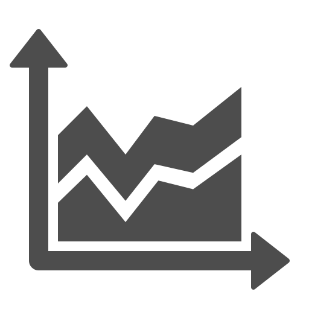

shapes.chart.Knob
chart.Knob is a great component for displaying numbers in a fancy way. They can also be animated to better visualize changes in values.

Create a basic Knob
The code snippet below creates a basic Knob. The Knob contains only one value.
var graph = new joint.dia.Graph;
var paper = new joint.dia.Paper({ el: $('#paper'), width: 200, height: 200, model: graph });
var knob = new joint.shapes.chart.Knob({
position: { x: 20, y: 20 },
size: { width: 100, height: 100 },
min: 0, max: 100, value: 80,
fill: '#2c97de'
});
graph.addCell(knob);
Styling the Knob
To set color of the knob, simply pass fill attribute with color of your choice to the knob constructor.
Moreover, as it is common in JointJS/Rappid, you can style any graphical element of the knob shape. For example, you might want to change
the font family or other font properties of the legend. For this,
you can customize the knob using the usual JointJS approach, via the
attrs object or the attr() method. This means that by just knowing the structure of the
SVG elements the knob is built from, you have full flexibility in styling your knob. Only SVG and
CSS standards are your limits.
Let's have a look at some examples demonstrating different knob styles. For the full SVG structure of the knob, please see the section Chart SVG Structure in this document. Once you know the structure, it is easy to make CSS selectors referencing the SVG elements that you want to style.
In the example above, we showed how to pass styling in the attrs object when
creating a new knob but you can also change attributes
of an existing knob:
knob.attr('.slice .slice-fill/stroke', 'black')
knob.attr('.slice .slice-fill/stroke-width', 2)
knob.attr('.legend-slice text/font-size', 16)
Note that you can use not only fill but a whole range of other SVG attributes
to style your knobs. Moreover, JointJS provides a facility to use gradients and filters.
You can take advantage of them to make your charts even prettier:
var knob = new joint.shapes.chart.Knob({
...
attrs: {
'.data': {
filter: { name: 'dropShadow', args: { dx: 0, dy: 0, blur: 3, color: 'black' } }
}
}
...
});
Multiple values
The Knob chart supports multiple series. The value, fill, min and max properties of the Knob constructor
accept arrays. Simply pass more values into the arrays and the Knob chart will automatically render multiple series as in the following example:
var chart = new joint.shapes.chart.Knob({
...
value: [30, 60, 90],
fill: ['#F2C500', '#4CC3D9', '#E94B35'],
min: 0, max: 100
});
Tooltips
Tooltips are a great way to show contextual information in your charts. The following demo shows how to use the ui.Tooltip plugin with combination with Knob chart:
IMPORTANT: For tooltips to work, you must have the ui.Tooltip plugin installed.
When setting up tooltips, we no longer work with the chart model. Instead, we request the paper
for the view that represents the chart. This view triggeres mousemove, and mouseout
events that we use to hide and show our tooltip. The mousemove event handler gets passed
two important arguments: slice and event.
These two arguments mean the following:
slice- an object with useful information about the slice the event was triggered on. This object contains the following properties:sliceIndex,serieIndex,value,percentage,fill,offset,angle,startAngle,endAngle,outerRadius,innerRadius, andlabel. Most of the time, for tooltips, the important ones arevalueandlabel.event- This is the DOM event object. For tooltips, the two important properties areclientXandclientY. We use these to render the tooltip at a particular position.
All these three arguments help us render our tooltip. Here is the relevant code snippet from the above demo:
Animation
In general, you can animate any property of the Knob chart (change its value over a certain period of time). In the following demo, we will show how to animate some properties of the Knobs. Using the same technique, you can animate an arbitrary property.
knob.transition('value', 100, { duration: 1000, timingFunction: joint.util.timing.exponential });
knob.transition('pieHole', .4, { duration: 1000, timingFunction: joint.util.timing.exponential });
You can find more about JointJS transitions in the API reference.
Knob Options
This is the full list of options that you can pass to the Knob constructor function.
value- a number or an array of numbers (in case of multiple series) representing the value of the knob.fill- a color or an array of colors (in case of multiple series) representing the color of the knob. If multiple series are used, the number of items in thevaluearray andfillarray should match. If they don't match, the first color from thefillarray will be taken wherever a color on the index matching the current serie value is missing.min- a minimum value of the knob.mintogether withmaxspecify the range for thevalue. The same logic for multiple series as described above forfillapplies.max- a maximum value of the knob. The same logic for multiple series as described above forfillapplies.serieDefaults- an object with various properties specifying how series should be rendered. As Knob inherits from Pie chart, all of the properties described in Pie serie object applies here as well.sliceDefaults- an object with various properties specifying how slices should be rendered. As Knob inherits from Pie chart, all of the properties described in Pie slice object applies here as well.
Knob API
chart.Knob
As chart.Knob inherits from chart.Pie all of the chart.Pie API methods apply here as well.
chart.KnobView
As chart.Knob inherits from chart.Pie all of the chart.PieView API methods apply here as well.
chart.KnobView events
As chart.Knob inherits from chart.Pie all of the chart.Pie events apply here as well.
Knob SVG structure
As chart.Knob inherits from chart.Pie, the SVG structure described in chart.Pie SVG structure applies here as well.
Copyright © 2009 - 2014 client IO (http://client.io, org@client.io)